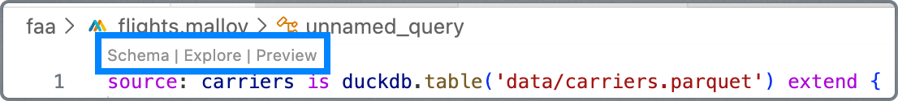
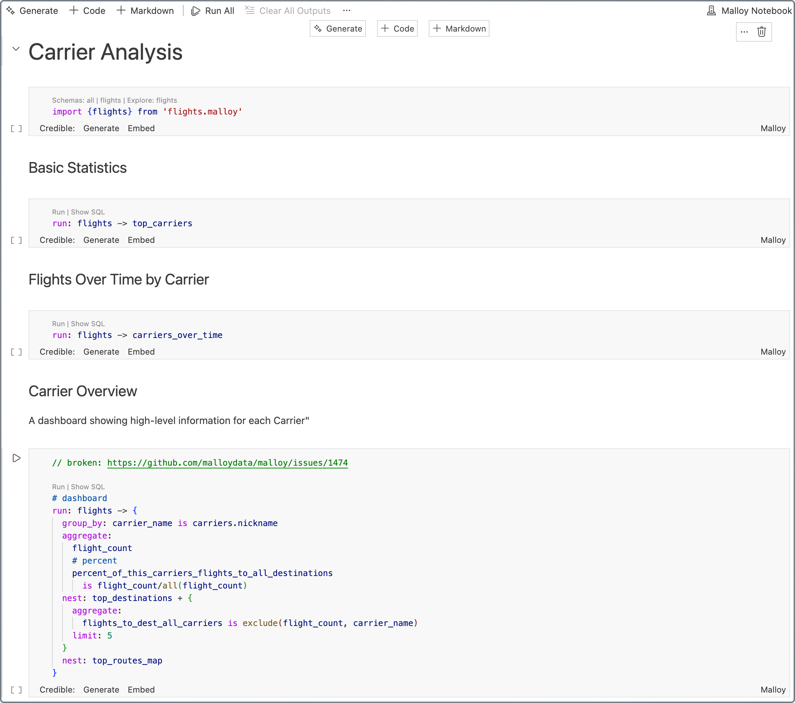
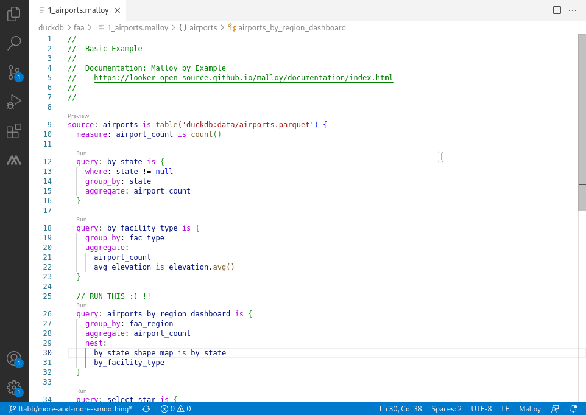

4. Render Tags
4. Render Tags
You've already used both kinds of Malloy file without thinking about it. Every chapter is a notebook (.malloynb), and since Chapter 2 each one has started with import "names.malloy" or import "ecommerce.malloy", which are model files (.malloy). This chapter explains the difference, shows how they work together, and walks you through setting up VS Code and DuckDB on your own computer.
The big idea
.malloy file |
.malloynb notebook |
|
|---|---|---|
| Holds | the model: sources, dimensions, measures, views, joins | narrative + queries + results |
| Audience | the people who maintain the data definitions | readers: classmates, managers, your future self |
| Contains prose? | only // comments and #" descriptions |
yes, as Markdown cells |
| Typical size | grows slowly; reused by many notebooks | one per analysis or report |
| Analogy | a dictionary | an essay that uses the dictionary |
Here's the rule of thumb: definitions go in the .malloy file, and questions go in the notebook. If you write the same expression in two notebooks, it probably belongs in the model.
📘 Malloy docs. Analyzing with notebooks · Models and statements
Inside a .malloy file
A model file is just Malloy statements: source:, query:, run:, and import. Here's the start of names.malloy, which sits next to this notebook:
#" U.S. baby names by state, gender, and birth year (1910–2021). source: names is duckdb.table('data/usa_names.parquet') extend { rename: year_born is `year` rename: births is `number` dimension: #" The decade a baby was born in, e.g. 1990. decade is floor(year_born / 10) * 10 ... measure: #" Total babies born (sum of the births column). total_births is births.sum() ... }
When you open a .malloy file in VS Code, small Run, Explore, and Schema links appear above each source:, run:, and query:. Click Run to see results in a panel on the right.

Inside a .malloynb notebook
A notebook is a list of cells. Each cell is either Markdown (text, tables, images, links) or Malloy (code). When you open the file in VS Code, you see the cells drawn nicely, with each Malloy cell's results right underneath it.

The file itself is plain text. Open one in any text editor and you'll see that cells are separated by >>>markdown and >>>malloy lines. (In the real file these lines start at the very left edge. We indented them here so this notebook doesn't treat them as real cell breaks.)
>>>markdown # My analysis Which names were popular in Ohio? >>>malloy import "names.malloy" >>>malloy run: names -> by_name + { where: state = 'OH' }
Because notebooks are plain text, they work well with Git. You can see exactly what changed between two versions. (Results are not saved in the file. They're recomputed each time you run the cell.)
Cells build on each other
Each Malloy cell can use anything defined in the cells above it. That's why the first cell of a chapter is usually the import. Let's prove it. This cell imports the model:

import "names.malloy"This cell defines a new source, with a new dimension, on top of the imported one:
source: names_ch5 is names extend { dimension: is_vowel_start is first_letter = 'A' | 'E' | 'I' | 'O' | 'U' }
And this cell uses both:
run: names_ch5 -> { where: year_born = 2021 group_by: is_vowel_start aggregate: total_births, name_count }
[ { "is_vowel_start": false, "total_births": "2071946", "name_count": 6734 }, { "is_vowel_start": true, "total_births": "740929", "name_count": 2190 } ]
SELECT (SUBSTR(base."name",1,1)) IN ('A','E','I','O','U') as "is_vowel_start", COALESCE(SUM(base."number"),0) as "total_births", count(distinct base."name") as "name_count" FROM 'data/usa_names.parquet' as base WHERE base."year"=2021 GROUP BY 1 ORDER BY 2 desc NULLS LAST
⚠️ Order matters. If you run a cell before the cells above it have run, you'll get errors like "Reference to undefined object." When in doubt, use Run All at the top of the notebook.
Named queries
Besides views (which belong to a source), a model can hold top-level named queries with query:. You can run them by name later, from the model or from any notebook that imports it:
query: popular_in_2021 is names -> by_name + { where: year_born = 2021 }run: popular_in_2021[ { "name": "Liam", "total_births": "20272" }, { "name": "Noah", "total_births": "19114" }, { "name": "Olivia", "total_births": "17728" }, { "name": "Emma", "total_births": "15433" }, { "name": "Oliver", "total_births": "14616" }, { "name": "Charlotte", "total_births": "13285" }, { "name": "Amelia", "total_births": "12952" }, { "name": "Ava", "total_births": "12759" }, { "name": "Elijah", "total_births": "12708" }, { "name": "Sophia", "total_births": "12496" } ]
SELECT base."name" as "name", COALESCE(SUM(base."number"),0) as "total_births" FROM 'data/usa_names.parquet' as base WHERE base."year"=2021 GROUP BY 1 ORDER BY 2 desc NULLS LAST LIMIT 10
Imports
import "names.malloy" reads another file and makes everything it defines available. The path is relative to the file doing the importing. So import "names.malloy" looks in the same folder, and import "../models/names.malloy" would look one folder up and then in models/.
📘 Malloy docs. Imports
Setting up your environment
You need three things: VS Code, the Malloy extension, and DuckDB. DuckDB comes inside the extension, so it's really only two installs.
Option A: VS Code on your computer (recommended)
Install VS Code from code.visualstudio.com.
Install the Malloy extension. Open the Extensions panel (
Cmd+Shift+Xon Mac,Ctrl+Shift+Xon Windows), search for Malloy, and click Install. Or install it from the VS Code Marketplace.Get the notebooks. Go to github.com/mrtimo/malloy-textbook-notebooks and click Code → Download ZIP (then unzip it), or clone it with
git clone https://github.com/mrtimo/malloy-textbook-notebooks.git.Open the
malloy-textbook-notebooksfolder with File → Open Folder…. Open that folder, not its parent. Then open01_basics.malloynband click Run All.

Option B: github.dev (nothing to install)
github.dev is VS Code running in your web browser.
On the notebooks repository page, press the
.(period) key, or use the Open in VS Code button at the top of any chapter on this website.When VS Code opens in the browser, install the Malloy extension from the Extensions panel.
Open any notebook and run it.
github.dev can only use DuckDB with files that are in the repository (Parquet, CSV, JSON). That's all we need. It's a little slower than desktop VS Code with big files, and you'll need to commit your changes to keep them.
📘 Malloy docs. VS Code extension setup · github.dev
Why the folder matters: malloy-config.json
The models refer to data with relative paths like duckdb.table('data/usa_names.parquet'). In VS Code, DuckDB resolves relative paths from the project root: the folder that holds malloy-config.json, or else the workspace folder. The malloy-textbook-notebooks folder includes this small malloy-config.json:
{ "connections": { "duckdb": { "is": "duckdb" } } }
It does two things. It declares a connection named duckdb (the name we use in duckdb.table(...)), and it marks malloy-textbook-notebooks/ as the root, so data/... paths work no matter how you opened the repository.
⚠️ "File not found: data/usa_names.parquet"? VS Code is resolving the path from the wrong folder. Open the malloy-textbook-notebooks folder itself, or make sure malloy-config.json is still in it.
📘 Malloy docs. Configuration: malloy-config.json
Creating your own notebook
New notebook: create a file whose name ends in
.malloynb(for examplemy_analysis.malloynb). VS Code opens it as a notebook.Add cells: hover between cells and click + Code or + Markdown. Make sure a code cell's language (bottom-right corner of the cell) says Malloy.
Run a cell: click the ▶ button or press
Shift+Enter.Edit Markdown: double-click a Markdown cell. Press
Escor click away to see it formatted.
Creating your own model
Create a file ending in
.malloy, for examplemy_model.malloy.Define sources in it, then
import "my_model.malloy"from a notebook.After you edit the model, re-run the notebook's import cell (or Run All) so the notebook sees the change.
Key takeaways
.malloyfiles hold the model (definitions)..malloynbnotebooks hold narrative, queries, and results, andimportthe model.Notebooks are plain text with
>>>markdown/>>>malloyseparators. Cells build on the cells above them.query:names a query so it can be run later.importpaths are relative to the importing file.Install VS Code and the Malloy extension (DuckDB is built in), and open
malloy-textbook-notebooks/as the workspace root.
🎯 Challenge 5.1: Your first notebook. Create a new notebook called my_first_notebook.malloynb in the malloy-textbook-notebooks folder. Give it a Markdown cell with a title and one sentence that explains what you're investigating. Then add a Malloy cell that imports names.malloy, and two query cells that answer your question.
🎯 Challenge 5.2: Change the model. Open names.malloy and add a new view called by_generation that groups by generation and shows total_births, sorted by total_births descending. Save the file. Then, in your notebook, re-run the import and run names -> by_generation. You've just changed a definition once and used it everywhere.
🎯 Challenge 5.3: Read the raw file. Open 05_files_and_notebooks.malloynb with a plain text editor (in VS Code, right-click the file → Open With… → Text Editor). Find the >>>malloy lines. How many Malloy cells does this chapter have?